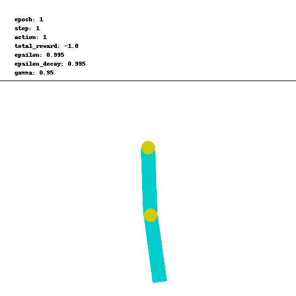
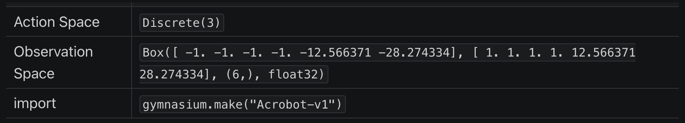
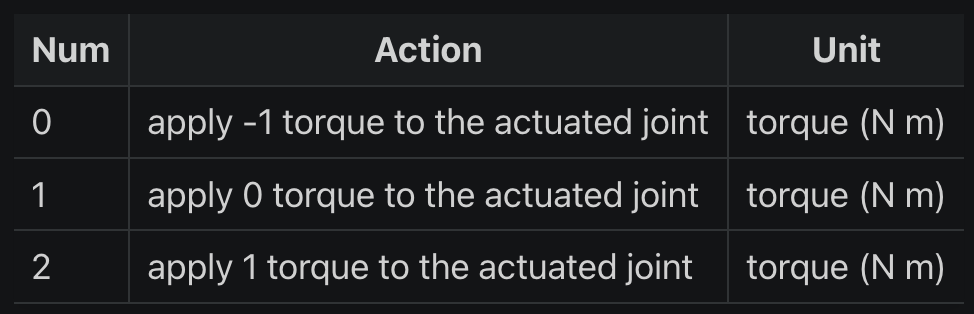
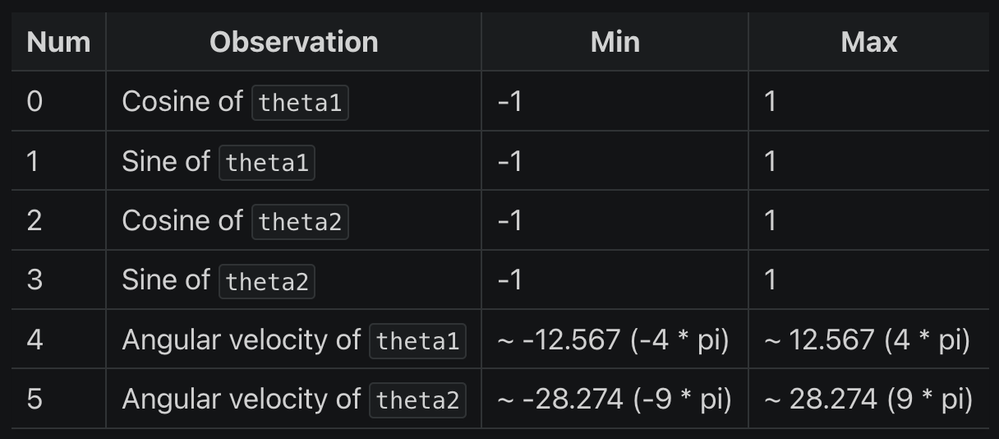
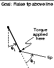
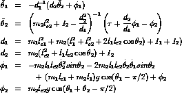
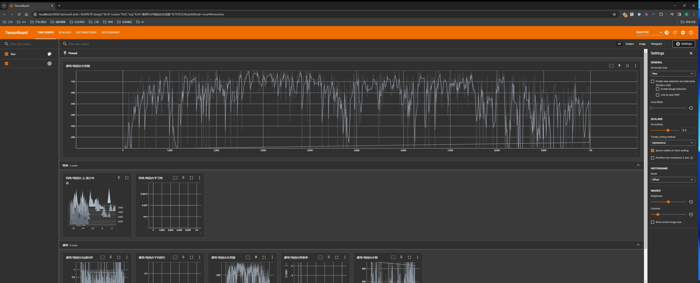
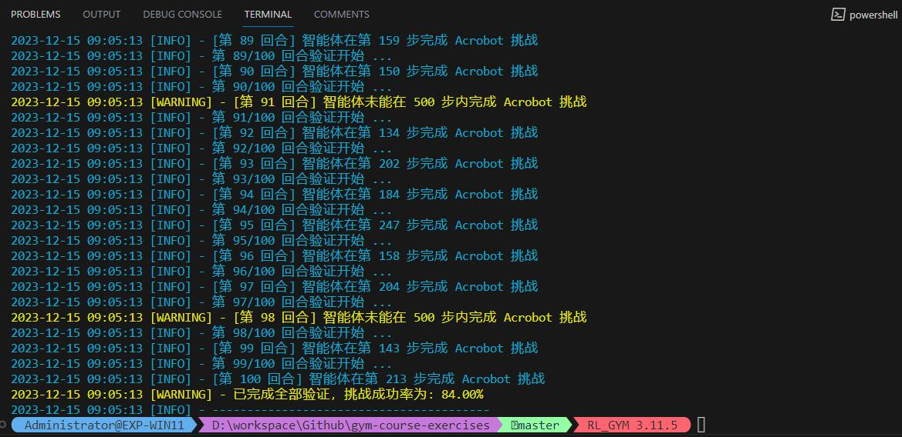
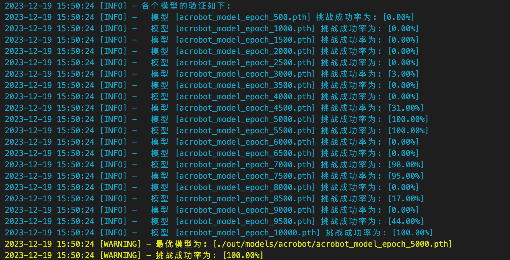
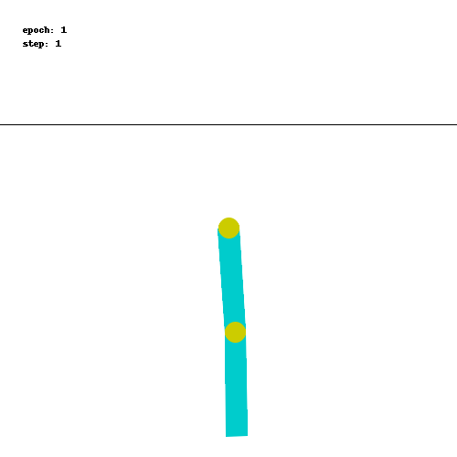

由于这是实践的第一课，我会尽可能地记录得详细一些
0x00 问题描述
Acrobot 是一个双节摆的模拟环境，它包含两个连在一起的摆杆，其中第一个摆杆固定在一个点上，第二个摆杆连接在第一个摆杆的另一端。
目标是仅通过控制第一个摆杆与第二个摆杆之间的联接点的扭矩来使第二个摆杆在要求的步数之内达到一定高度。

0x10 问题解读
从 Acrobot 页面的描述中，我们可以得到不少关键信息：
0x11 环境说明

首先看到这个这个表，它的含义是：
- 在 python 通过以下语句可以创建 Acrobot 的预设环境：
import gymnasiumenv = gymnasium.make("Acrobot-v1")
- 而在这个预设环境中：
- 执行
env.action_space可以得到动作空间（Action Space）为Discrete(3) - 执行
env.observation_space可以得到观测空间（Observation Space）为Box([ -1. -1. -1. -1. -12.566371 -28.274334], [ 1. 1. 1. 1. 12.566371 28.274334], (6,), float32)
- 执行
对于 “环境”、“动作空间”、“观测空间” 等术语我们已经在第一节里面解释过，这里就不再赘述其含义了。
Acrobot-v1 表示使用 Acrobot（版本 v1）的预设环境（不同版本的交互接口可能不一样）。
预设环境的好处是不需要我们定义 “动作空间” 、“观测空间/状态空间”、“奖励系统”、“交互接口” 等等，因为它有一个统一标准，我们只需要关注 “训练算法” 本身，方便我们学习、交流和比对。
但这也预示着，我们以后要训练自己的模型（如某个游戏的模型），我们除了要研究训练算法之外，还必须自己定义和构建环境与之交互。
0x12 动作空间
动作空间需要结合 Acrobot 文档给出的表格一起说明：

从表格可知，env.action_space 只有 3 个值，它代表了可以施加在两个链接之间的活动关节上的力矩（torque）的大小：
- 动作 0： 施加 -1 的力矩到活动关节上
- 动作 1： 施加 0 的力矩到活动关节上
- 动作 2： 施加 1 的力矩到活动关节上
这些动作是离散的（离散空间），通过选择不同的动作，智能体可以控制 Acrobot 的行动，使其实现特定的运动目标，如摆动到一定高度。
0x13 观测空间
这里先解释一下观测空间 observation_space 初始状态的含义： Box([ -1. -1. -1. -1. -12.566371 -28.274334], [ 1. 1. 1. 1. 12.566371 28.274334], (6,), float32)
Box 是 gym 定义的数据类型，代表一个 n 维的盒子，可以用来定义在每个维度上的连续值范围（连续空间）:
[ -1. -1. -1. -1. -12.566371 -28.274334]是观察空间中每个维度的最小值[ 1. 1. 1. 1. 12.566371 28.274334]是观察空间中每个维度的最大值(6,)表示观察空间是一个六维的空间。这是一个元组，其中只有一个元素，即6，表明有 6 个独立的观察值。float32表示这些值是 32 位浮点数
同样地，观测空间需要结合 Acrobot 文档给出的表格一起说明：

从表格可知，observation_space 的 6 个独立的观察值分别代表：
- 0: Cosine of theta1： 即 cosθ1，第一个关节角度的余弦值（这个角度是指第一个关节与垂直向下位置的夹角）
- 1: Sine of theta1： 即 sinθ1，第一个关节角度的正弦值
- 2: Cosine of theta2： 即 cosθ2，第二个关节角度的余弦值（这个角度是相对于第一个关节的）
- 3: Sine of theta2： 即 sinθ2，第二个关节角度的正弦值
- 4: Angular velocity of theta1： 第一个关节的角速度
- 5: Angular velocity of theta2： 第二个关节的角速度


0x14 奖励
奖励是由预设环境设置的，目标是让自由端（第二关节的末端）以尽可能少的步数达到指定的目标高度，因此：
- 所有未达到目标的步数都会获得 -1 的奖励
- 达到目标高度会导致终止，奖励为 0 （这一步获得的奖励为 0，并非累计的负值清零）
- 奖励阈值为 -100
奖励阈值是一个性能评估的参考点，它可能被用来确定智能体是否在一个给定数量的步骤内表现得足够好。在这个问题中，未达标的步数都会获得 -1，说明如果智能体在 100 步内没有达到目标，则其性能被认为是不理想的。然而，这并不意味着回合在 100 步后自动结束，与后面的 “回合终止条件” 不矛盾。
特别说明的是，第 2 点是 成功完成目标的这一步获得的奖励为 0，并非累计的负值清零 。
在不少的强化学习问题中，成功完成任务通常会获得正面的奖励（即大于 0 的奖励），以鼓励智能体朝着目标方向努力。然而，在 Acrobot 问题中，成功的奖励是 0，这看起来似乎不够激励智能体。
但实际上，这种奖励机制的设计有其内在逻辑的：
- 负面奖励的积累：由于每个未成功的步骤都会得到 -1 的奖励，智能体会积累负面奖励。这种设计实际上鼓励智能体尽快完成任务，以避免累积更多的负面奖励。
- 目标达成即停止积累负面奖励：在这个设置中，达到目标的奖励是 0，这意味着一旦达成目标，智能体便不再积累负面奖励。因此，达到目标本身就是一种激励，因为它停止了负面奖励的累积。
- 总体奖励最大化：在强化学习中，智能体的目标通常是最大化整个回合的总奖励。在 Acrobot 的情境下，这意味着尽可能快地达到目标，以减少负面奖励的总量。
因此，尽管一次性的奖励为 0 看起来诱惑不足，但在总体的学习过程和长期目标的背景下，这种奖励机制是有其合理性和效果的。强化学习的关键在于学习从初始状态到达目标状态的最有效路径，而不仅仅是关注单步的奖励。
0x15 初始状态
初始状态中的每个参数（θ1、θ2 和两个角速度）均在 -0.1 和 0.1 之间统一初始化。
这意味着在初始状态下，两个关节都指向下方，具有一定的随机性。
0x16 回合终止
如果发生以下情况之一，则回合终止：
- 终止： 自由端到达目标高度，数学表现为：
-cosθ1 - cos(θ2 + θ1) > 1.0 - 中止： 回合步数大于 500（v0 版本 为 200）
0x20 解题过程
以上就是针对 Acrobot 的题目解读，现在我们要用强化学习去解决这个问题。
传统的解法是我们需要设置夹角、长度、重量等各种变量，还要考虑初始速度、角动量、重力等因素影响，建立一个数学模型，然后求解。
但是在强化学习模型中，这些过程变量如何影响 Acrobot 的状态，是构建 “环境” 时才需要考虑的事情，但是 Gym 已经将其封装成了一个预设环境，我们自然而然就无需再考虑了。
我们真正要做的事情（或者让智能体做的事情），其实很简单，就是 “试错”，通过在无限的试错中不断积累经验学习，寻找出一条通向最优答案的道路。
但具体要怎么做呢 ？
首先我们要按照第一节的指引安装好环境，然后所有的强化学习模型训练，都是有一个统一的套路框架的：
- 创建强化学习环境
- 定义一个循环训练框架
- 筛选一个合适的算法开始训练智能体（试错）
0x21 创建强化学习环境
这步其实很简单，只需两行代码即可创建预设的环境：
import gymnasium as gym
env = gym.make('Acrobot-v1')Acrobot-v1 并不是随便定义的名称，而是 Gym 库中预定义的一个环境的名字：
- Acrobot: 从预设的强化学习环境中选择名为 Acrobot 的环境，这是一个经典的控制问题，涉及到一个双节摆系统
- v1: 表示该环境的版本号（Gym 库可能会更新环境，带来不同版本，其中包含了一些变化或改进）
因此这两行代码就是在告诉 Gym 库，您想要创建并与 Acrobot-v1 环境进行交互。
预设环境提供了一个标准化的框架（包括状态空间、动作空间和奖励系统）供人们在训练智能体（Agent）时可以和环境进行交互。
我们需要实现自己的强化学习算法来训练一个智能体，使其学习如何在这个环境中做出最佳的决策。
简而言之，这些环境提供的是问题设置和交互能力，而解决问题的学习算法则由我们来开发和实施。
如果以后想训练一个其他游戏的模型，到时肯定没有预设环境的，那么就需要我们自己实现这个环境：
- 继承并实现
gym.Env类的接口：- 定义观测空间/状态空间
- 定义动作空间
- 设置重置状态方法
- 设置奖励系统
- 设置终止条件
- 封装和游戏交互的 API，用于智能体获取状态信息和发送动作指令、同时通过决策的动作更新环境状态
这个过程涉及到游戏开发，可能比较复杂，在零基础的前提下，很难实现一个环境（尤其是定义奖励系统）。
故 Gym 帮我们分解成若干个基础的预设环境、先专注如何在哪些问题下如何选择最优的算法去解决基础问题；待到对强化学习有了基本认知之后，自然就懂得如何定制环境解决实际问题了。
0x22 定义一个循环训练框架
对于大部分的强化学习模型，其训练框架都是大同小异的：
import gym
# 创建预设环境
env = gym.make('Acrobot-v1')
# 拟训练 1000 个回合
for episode in range(1000) :
# 1. 每次训练都须 重置环境，获得初始状态的观测空间
observation = env.reset()
# 开始回合训练
while True :
# FIXME: 2. 根据当前观测空间的状态、选择下一个动作（不同的强化学习算法，选择的策略也会不同）
action = select_next_action(observation)
# 3. 与环境交互、执行下一步动作（旧版本的返回值只有 4 个值，没有 truncated）
next_observation reward, terminated, truncated, info = env.step(action)
done = terminated or truncated
if done:
break
# FIXME: 4. 更新/优化学习模型参数
update(...)
# 5. 更新当前观测空间的状态
observation = next_observation
env.close()
# 保存训练模型
torch.save(targs.model.state_dict(), ACROBOT_MODEL_PATH)其中第 2、4 步要根据所选择的强化学习算法进行调整。
现在问题是，选什么算法合适呢 ？
0x23 筛选一个合适的算法开始训练智能体
其实没有绝对合适的算法，还是新手的我请教了 ChatGPT，它说选择强化学习算法通常取决于几个关键因素：
- 问题类型:
- 连续 vs 离散: 对于离散动作空间，可以考虑使用 Q-Learning 或 Sarsa。对于连续动作空间，策略梯度方法或 Actor-Critic 方法可能更合适。
- 单目标 vs 多目标: 多目标问题可能需要特定的算法来平衡不同目标之间的权衡。
- 环境特性:
- 确定性 vs 随机性: 确定性环境下，基于模型的方法可能表现更好。在高度随机或不确定的环境中，基于模型无关的方法可能更有效。
- 完全观测 vs 部分观测: 如果环境是部分可观测的，可以考虑使用 POMDP（部分可观测的马尔可夫决策过程）模型。
- 性能和稳定性需求:
- 如果需要快速学习，可以考虑使用深度 Q 网络（DQN）或其变体。
- 对于需要高稳定性的应用，可能更倾向于使用策略梯度方法，因为它们通常在学习过程中更稳定。
综合考虑这些因素，可以有助于选择最适合特定问题和环境的强化学习算法。
通常，开始时使用一种较为简单的方法，然后根据需要逐步迁移到更复杂的算法。
条条大路通罗马，所有问题都没有标准算法，更多算法可以参考系统的强化学习课程《UCL Course on RL》
对于 Acrobot 问题，理论上 Q-Learning 算法会更适合，主要是因为：
- Q-Learning 使用贪婪策略来更新 Q 值，即选择下一个状态中 Q 值最大的动作来进行更新，换言之，它侧重于找到最优解并且在理论上能够更快地收敛到最佳策略。
- Acrobot 问题需要找到快速摆动到目标位置的策略，Q-Learning 的贪婪特性可能在这方面表现更好。
但是 Q 表是离散的，而 Acrobot 的状态空间是连续的，所以实际上 Q-Learning 并不适用（除非将连续的状态映射到离散的索引上，但会把问题复杂化）。
故而这里修改为使用 Q-Learning 的一个扩展算法 —— 深度 Q 网络（DQN, Deep Q-Network）。
DQN 在基本的 Q-Learning 框架上引入了深度学习，它使用深度神经网络来逼近 Q 表，使得 Q 表可以适用于具有大量连续状态和动作的问题、处理更复杂的、高维的输入（如视觉输入），并且能够更好地泛化到未见过的状态。
0x30 DQN 算法剖析
完整的训练源码见 train_DQN.py
这里挑了算法的几个关键部分（看代码注释就可以了，不单独拎出来解释了）：
0x31 定义网络
# 神经网络模型： 简单的三层全连接网络
# 可以根据具体问题和实验结果进行调整层数、每层的神经元数量等
class DQN(nn.Module): # 在 PyTorch 中，nn.Module 是所有神经网络模块的基类
def __init__(self, state_size, action_size):
super(DQN, self).__init__()
self.fc1 = nn.Linear(state_size, 24) # 定义第一个全连接层（fc1），它接收状态输入，并将其映射到24个隐藏单元
self.fc2 = nn.Linear(24, 24) # 定义第二个全连接层（fc2），它进一步处理来自第一层的数据。
self.fc3 = nn.Linear(24, action_size) # 定义第三个全连接层（fc3），它将隐藏层的输出映射到动作空间的大小，即为每个可能的动作生成一个 Q 值
# 覆盖 nn.Module 中的 forward 方法（前向传播函数）
# 在 PyTorch 中，只需定义前向传播函数，而后向传播函数（用于计算梯度）是由PyTorch的autograd自动定义的
def forward(self, x):
x = torch.relu(self.fc1(x)) # 应用了第一个全连接层，并对其输出应用了ReLU（修正线性单元）激活函数
x = torch.relu(self.fc2(x)) # 对第二个全连接层的输出应用了ReLU激活
return self.fc3(x) # 网络返回第三个全连接层的输出。这个输出代表了在给定状态下每个动作的预期Q值0x32 初始化训练参数和网络模型
self.obs_size = env.observation_space.shape[0] # 状态空间维度
self.action_size = env.action_space.n # 动作空间数量
self.model = DQN(self.obs_size, self.action_size) # DQN 简单的三层网络模型（主模型）
self.memory = deque(maxlen=2000) # 经验回放存储。本质是一个双端队列（deque），当存储超过2000个元素时，最旧的元素将被移除。经验回放是DQN中的一项关键技术，有助于打破经验间的相关性并提高学习的效率和稳定性。
self.batch_size = args.batch_size # 从【经验回放存储】中一次抽取并用于训练网络的【经验样本数】
self.device = scan_device(args.cpu) # 检查 GPU 是否可用
self.model.to(self.device) # 将模型和优化器移动到 GPU （或 CPU）
self.optimizer = optim.Adam(self.model.parameters(), lr=0.001) # 用于训练神经网络的优化器。这里使用的是Adam优化器，一个流行的梯度下降变种，lr=0.001设置了学习率为0.001。
self.criterion = nn.MSELoss() # 用于训练过程中的损失函数。这里使用的是均方误差损失（MSE Loss），它是评估神经网络预测值与实际值差异的常用方法。
self.epoches = args.epoches # 总训练回合数
self.last_epoch = 0 # 最后一次记录的训练回合数
self.zero = self.args.zero # 强制从第 0 回合开始训练
self.cur_epsilon = args.epsilon # 当前探索率
self.epsilon_decay = args.epsilon_decay # 探索率的衰减率
self.min_epsilon = args.min_epsilon # 最小探索率
self.gamma = args.gamma # 折扣因子
self.render = args.render # 渲染 GUI 开关
self.info = {} # 其他额外参数
# 在 DQN 中，通常会使用两个模型：
# 一个是用于进行实际决策的主模型（self.model）： 用于生成当前的 Q 值
# 另一个是目标模型（target_model）：用于计算期望的 Q 值，以提供更稳定的学习目标
self.target_model = DQN(self.obs_size, self.action_size) # 目标模型
self.target_model.to(self.device) # 将模型移动到 GPU （或 CPU）
self.update_target_every = 5 # 定义更新目标模型的频率0x33 选择下一步动作策略
def select_next_action(targs: TrainArgs, obs) :
'''
选择下一步要执行的动作。
DQN 一般使用 epsilon-greedy 策略：
智能体在选择动作时，有一定概率随机探索环境，而其余时间则根据已学习的策略选择最佳动作
:params: targs 用于训练的环境和模型关键参数
:params: obs 当前观测空间的状态
:return: 下一步要执行的动作
'''
# 在观测空间随机选择一个动作（受当前探索率影响）
if np.random.rand() <= targs.cur_epsilon :
action = targs.env.action_space.sample()
# 智能体根据当前经验、选择当前估计最优的动作
else :
action = torch.argmax( # 2. 使用torch.argmax选择具有最高预期Q值的动作（当前状态下的最佳动作）
targs.model(obs) # 1. 将观测空间当前状态 obs （张量）传递给神经网络模型（model），神经网络模型输出每个可能动作的预期Q值
).item() # 3. 从张量中提取动作值
return action0x34 执行动作并获得反馈
def exec_next_action(targs: TrainArgs, action, epoch=-1, step_counter=-1) :
'''
执行下一步动作
:params: targs 用于训练的环境和模型关键参数
:params: action 下一步动作
:return: 执行动作后观测空间返回的状态
'''
# 旧版本的 env.step(action) 返回值只有 4 个参数，没有 truncated
# 但是 truncated 和 info 暂时没用，详见 https://stackoverflow.com/questions/73195438/openai-gyms-env-step-what-are-the-values
next_raw_obs, reward, terminated, truncated, info = targs.env.step(action)
# log.debug(f"[第 {epoch} 回合] 步数={step_counter}")
# log.debug("执行结果：")
# log.debug(f" 状态空间变化：{next_raw_obs}") # 执行动作后的新状态或观察。这是智能体在下一个时间步将观察到的环境状态。
# log.debug(f" 累计获得奖励：{reward}") # 执行动作后获得的奖励。这是一个数值，指示执行该动作的效果好坏，是强化学习中的关键信号，作为当次动作的反馈。
# log.debug(f" 回合是否结束: {terminated}") # 可能成功也可能失败，例如在一些游戏中，达到目标或失败会结束回合。
# log.debug(f" 回合是否中止: {truncated}") # 回合因为某些约束调节提前中止，如步数限制等。
# log.debug(f" 其他额外信息: {info}") # 通常用 hash 表附带自定义的额外信息（如诊断信息、调试信息），暂时不需要用到的额外信息。
next_obs = to_tensor(next_raw_obs, targs) # 把观测空间状态数组送入神经网络所在的设备
done = terminated or truncated # 在 Acrobot 问题中，如果超过 500 步未达成目标就会中止游戏
return (next_obs, reward, done)0x35 根据反馈更新 DQN 网络
def dqn(targs: TrainArgs, total_loss) :
'''
进行 DQN 学习（基于 Q 值的强化学习方法）：
这个过程是 DQN 学习算法的核心，它利用从环境中收集的经验来不断调整和优化网络，使得预测的 Q 值尽可能接近实际的 Q 值。
通过迭代这个过程，使得神经网络逐渐学习到一个策略，该策略可以最大化累积奖励。
:params: targs 用于训练的环境和模型关键参数
:params: action 下一步动作
:return: 执行动作后观测空间返回的状态
'''
# 确保只有当【经验回放存储】中的样本数量超过批处理大小时，才进行学习过程
# 这是为了确保有足够的样本来进行有效的批量学习
if len(targs.memory) <= targs.batch_size :
return
# 从【经验回放存储】中随机抽取 batch_size 个样本数
# 这种随机抽样是为了减少样本间的相关性，增强学习的稳定性和效率
transitions = random.sample(targs.memory, targs.batch_size)
# 解压 transitions 到单独的批次
batch = Transition(*zip(*transitions))
# 将每个样本的组成部分 (obs, action, reward, next_obs, done) ，拆分转换为独立的批次
# 目的是后续计算时可以批量进行、加速运算 （单个计算也可以，但是太慢了）
obs_batch = cat_batch_tensor(batch.obs, torch.float32)
action_batch = cat_batch_tensor(batch.action, torch.long, up_dim=True)
reward_batch = cat_batch_tensor(batch.reward, torch.float32, up_dim=True)
next_obs_batch = cat_batch_tensor(batch.next_obs, torch.float32)
done_batch = cat_batch_tensor(batch.done, torch.float32, up_dim=True)
# 获得当前状态下的 Q 值（对当前状态的观测进行前向传播的结果，用于后续计算损失）
current_Q_values = get_current_Q_values(targs.model, obs_batch, action_batch)
# 计算下一个状态的最大预测 Q 值
expected_q_values = calculate_expected_Q_values(
targs.target_model, targs.gamma,
next_obs_batch, reward_batch, done_batch
)
# 计算 Huber 损失（亦称平滑 L1 损失，用于表示当前 Q 值和预期 Q 值之间的差异）
# Huber 损失是均方误差和绝对误差的结合，对异常值不那么敏感
loss = F.smooth_l1_loss(
current_Q_values, # 是一个二维张量，其形状是 [batch_size, 1]，因为它是通过 gather 操作从网络输出中选取的特定动作的 Q 值
expected_q_values.unsqueeze(1) # 在张量中增加一个维度，其中第二个维度（列）的大小为 1，即使其形状从 [batch_size] 转换成 [batch_size, 1]
)
# 优化模型
optimize_params(targs.model, targs.optimizer, loss)
# 累积损失更新
total_loss += loss.item()
def cat_batch_tensor(batch_data, data_type, up_dim=False) :
'''
连接一批张量
:params: batch_data 一批张量数据
:params: data_type 张量元素的数据类型
:params: up_dim 是否需要升维。当且仅当张量数据是 0 维标量时，才需要升维，否则 torch.cat 会报错
:return: 连接后的张量
'''
batch_tensor = [torch.tensor([d], dtype=data_type) for d in batch_data] \
if up_dim else \
[d.clone().detach() for d in batch_data]
return torch.cat(batch_tensor)
def get_current_Q_values(model, obs_batch, action_batch) :
'''
获取当前状态下的 Q 值（真实值）
:params: model 主网络/主模型。在 DQN 算法中，通常使用两个网络：主网络（用于选择动作和更新），目标网络（用于计算目标 Q 值）。
:params: obs_batch 观测空间的当前状态批量数据。
:params: action_batch 动作空间的批量数据
:return:
'''
# 步骤 1: 将观测数据（状态）输入到模型中，以获取每个状态下所有动作的预测 Q 值。
# obs_batch 是当前状态的批量数据
predicted_Q_values = model(obs_batch)
# 步骤 2: 对动作张量进行处理，以使其维度与预测的 Q 值张量匹配。
# action_batch 包含了每个状态下选择的动作。
# unsqueeze(1) 是将 action_batch 从 [batch_size] 转换为 [batch_size, 1]
# 这是为了在接下来的操作中能够选择正确的 Q 值。
actions_unsqueezed = action_batch.unsqueeze(1)
# 步骤 3: 从预测的 Q 值中选择对应于实际采取的动作的 Q 值。
# gather 函数在这里用于实现这一点。
# 第一个参数 1 表示操作在第二维度（动作维度）上进行。
# actions_unsqueezed 用作索引，指定从每一行（每个状态）中选择哪个动作的 Q 值。
cur_Q_values = predicted_Q_values.gather(1, actions_unsqueezed)
return cur_Q_values
def calculate_expected_Q_values(target_model, gamma, next_obs_batch, reward_batch, done_batch) :
'''
计算下一个状态的最大预测 Q 值
:params: target_model 目标网络/目标模型。在 DQN 算法中，通常使用两个网络：主网络（用于选择动作和更新），目标网络（用于计算目标 Q 值）。目标网络的参数定期从主网络复制过来，但在更新间隔内保持不变。这有助于稳定学习过程。
:params: gamma 折扣因子: 用于折算未来奖励的在当前回合中的价值。
:params: next_obs_batch 执行动作后、观测空间的状态批量数据。
:params: reward_batch 执行动作后、获得奖励的批量数据
:params: done_batch 回合完成状态的批量数据
:return:
'''
# target_model(next_obs_batch): 将下一个状态的批量数据输入目标网络，得到每个状态下每个可能动作的预测 Q 值。
# detach(): 用于切断这些 Q 值与计算图的联系。它会创建一个新的张量，它与原始数据共享内容，但不参与梯度计算。这在计算目标 Q 值时很常见，因为我们不希望在反向传播中更新目标网络。
# max(1)：用于找出每个状态的所有动作 Q 值中的最大值。.max(1) 的 1 表示操作是在张量的第二个维度上进行的（即动作维度）
# [0]：从 .max(1) 返回的结果中，只取最大值。因为 .max(1) 返回一个元组，其中第一个元素（索引为 0 的元素）是每一行的最大值。
next_Q_values = target_model(next_obs_batch).detach().max(1)[0]
# 这个公式基于贝尔曼方程（思路和动态规划一样）
# 这个公式表明，一个动作的预期 Q 值等于即时奖励加上在下一个状态下所有可能动作的最大预期 Q 值的折扣值。这个折扣值反映了未来奖励的当前价值。
expected_Q_values = reward_batch + (gamma * next_Q_values * (1 - done_batch))
# 为什么要乘以 (1 - done_batch)
# 当一个回合结束时（例如智能体到达了目标状态或触发了游戏结束的条件），在该状态下没有未来的奖励。
# 乘以 (1 - done_batch) 确保了如果回合结束，未来奖励的贡献为零。
# 换句话说，如果 done_batch 中的值为 1（表示回合结束），next_Q_values 将不会对计算的 expected_Q_values 产生影响。
return expected_Q_values
def optimize_params(model, optimizer, loss) :
# 优化模型
optimizer.zero_grad() # 清除之前的梯度。PyTorch 会默认累积梯度，如果不清除梯度，新计算的梯度会被加到已存在的梯度上，在 DQN 中这会使得训练过程变得不稳定，甚至可能导致模型完全无法学习。
loss.backward() # 反向传播，计算梯度
# 梯度裁剪，防止梯度爆炸
# 梯度爆炸会导致模型权重的大幅更新，使得模型无法收敛或表现出不稳定的行为
for param in model.parameters() :
param.grad.data.clamp_(-1, 1) # 限制梯度值在 -1 到 1 的范围内，这是防止梯度值变得过大或过小、导致训练不稳定
optimizer.step() # 更新参数（梯度下降，指使用计算出的梯度来更新模型参数的过程）0x40 记录训练过程
在强化学习训练中，可以使用 TensorBoard 实时查看训练情况。
TensorBoard 是一个用于可视化和监视深度学习模型训练过程的工具，它原版是 TensorFlow 中的一个功能，但后来 PyTorch 也对其提供了支持。
TensorBoard 只需要在训练开始之前初始化即可：
# 入参的 `logdir` 是记录训练过程各个参数的位置，默认为 `runs`
writer = SummaryWriter(logdir="runs")然后在每个回合训练结束后，记录训练过程的参数，常见的参数有：
# 记录探索率的变化：跟踪探索率的变化是很有用的，以确保它在训练过程中逐渐减小
writer.add_scalar('通常/每回合探索率', targs.cur_epsilon, epoch)
# 记录每个回合的奖励：除了记录总奖励外，还要记录每个回合的奖励，以便更详细地了解每个回合的表现
writer.add_scalar('通常/每回合总奖励', total_reward, epoch)
# 记录每个回合的步数和耗时： 在 Acrobot 问题中这两个指标和 reward 是一样的，可以不看
writer.add_scalar('通常/每回合步数', step_counter, epoch)
writer.add_scalar('通常/每回合完成时间', finish_time, epoch)
# 记录损失值：每个回合的损失值，以监测模型学习的情况
writer.add_scalar('通常/每回合平均损失', total_loss / step_counter, epoch)
# 记录学习率和其他超参数：这是 DQN 特有的指标
writer.add_scalar('特殊/每回合学习率', targs.optimizer.param_groups[0]['lr'], epoch)
# 记录 Q 值的分布：这是 DQN 特有的指标，可以了解模型对每个 “状态-动作对” 的估计
writer.add_histogram('特殊/每回合 Q 值分布', targs.model(obs), epoch)这些记录可以有助于了解模型的性能和训练过程，其中：
add_scalar： 用于记录简单的标量值（即单个数值），这在监控诸如损失、精确度或其他度量时非常有用。它在训练过程中用于跟踪随时间变化的单一值。add_histogram： 用于记录值的分布，例如模型参数（如权重和偏置）或层的激活值。这对于理解和调试神经网络非常有帮助，因为它可以展示训练过程中这些值的分布是如何变化的。- 对于参数得 key 值格式为：
分组名/指标名，其中 分组名 可以不要，其效果是在 UI 上面是否分组显示
在训练过程中，启动另一个终端并执行命令：
# logdir 要和前面初始化得位置一样
tensorboard --logdir=runs会出现访问 http://localhost:6006/ 的提示，在浏览器访问即可看到实时的训练参数：

0x50 保存训练模型
在所有回合训练完成后，调用以下代码即可存储训练好的模型：
# model 为训练好的主模型
torch.save(model.state_dict(), './out/models/acrobot_model.pth')训练好的模型即可用来验证是否可以通关 Acrobot 。
0x60 验证训练结果
完整的验证源码见 test_DQN.py
这里挑几个关键部分解释（看代码注释就可以了，不单独拎出来解释了）：
0x61 创建验证环境
这步其实很简单，只需两行代码即可：
import gymnasium as gym
env = gym.make('Acrobot-v1',
render_mode=("human" if args.render else None)
) # 验证时如果有需要，可以渲染 GUI 观察实时挑战情况但是这里和训练模型时创建的环境有一点区别：可以追加 render_mode="human" 参数把可视化 GUI 渲染出来。
训练时尽量不要渲染 GUI，会极其影响训练效率
0x62 验证模型
def test(targs : TrainArgs, epoch) :
'''
验证模型是否完成挑战。
:params: targs 用于运行模型的环境和关键参数
:params: epoch 正在验证的回合数
:return: 是否完成挑战
'''
raw_obs = targs.env.reset()
# 把观测空间的初始状态转换为 PyTorch 张量，并送入神经网络所在的设备
obs = to_tensor(raw_obs[0], targs)
# Acrobot 问题的 v1 版本要求在 500 步内完成
ACROBOT_V1_MAX_STEP = 500
step_counter = 0
for _ in range(ACROBOT_V1_MAX_STEP) :
# 渲染 GUI（前提是 env 初始化时使用 human 模式）
if targs.render :
targs.env.render()
# 使用模型推理下一步的动作
with torch.no_grad() : # no_grad 告诉 PyTorch 在这个块中不要计算梯度。
# 在推理过程中，是使用模型来预测输出，而不是通过反向传播来更新模型的权重。
# 传递输入数据到模型
model_output = targs.model(obs)
# 在模型的输出中找到具有最大 Q 值的动作的索引
action_index = model_output.max(1)[1]
# 调整张量形状为 (1, 1)
action_index_reshaped = action_index.view(1, 1)
# 获取单个动作值
action = action_index_reshaped.item()
# 执行动作并获取下一个状态
next_obs, _, done, _, _ = targs.env.step(action)
obs = to_tensor(next_obs, targs)
if done:
break
step_counter +=1
# log.debug(f"[第 {epoch} 回合] 已执行 {step_counter} 步: {action}")
is_ok = False
if step_counter < ACROBOT_V1_MAX_STEP :
log.info(f"[第 {epoch} 回合] 智能体在第 {step_counter} 步完成 Acrobot 挑战")
is_ok = True
else :
log.warn(f"[第 {epoch} 回合] 智能体未能在 {ACROBOT_V1_MAX_STEP} 步内完成 Acrobot 挑战")
return is_ok
看得出这次训练效果还可以，挑战成功率达到了 84% ，但是训练还有优化空间、使得模型的性能可以更好。
0x63 改进思路
强化学习是一个需要不断尝试和调整的过程，通常需要多次迭代才能得到令人满意的结果。针对性能问题、一些可能的改进方法是：
- 调整超参数： 尝试不同的神经网络架构、学习率、折扣因子等，不同的超参数设置会对训练结果产生显著影响。
- 增减训练次数： 需要观察 TensorBoard 是否训练次数过多导致过拟合、或者过少不足以让模型学到足够好的策略。
- 使用更复杂的模型： 增加模型的容量或层数，以便更好地拟合环境。
- 更换其他强化学习算法： 除了 DQN 之外，尝试使用 DDPG、PPO、A3C 等，这些算法可能在某些问题上表现更好。
- 经验回放： 确保经验回放存储足够大、且样本具有多样性，以确保模型充分学习。
- 网络参数优化问题： 如是否存在梯度爆炸、梯度消失等。
具体调整的过程就不演示了，最后发现是训练 10000 回合后、过拟合导致成功率偏低。
取训练次数在 5000 回合左右的模型、成功率就能达到 100% ：


过拟合：模型在训练数据上表现得非常好，准确率很高，但是当应用于未见过的新数据时，性能显著下降。由于模型学习了训练数据中的噪声（即不代表整体数据特征的随机变异），它对于新的、稍微不同的数据可能会表现出过度敏感或不准确的反应。
0x70 断点训练
这里我是怎么取中间训练的结果的呢？是因为我实现了 断点训练。
大量的重复训练需要耗时极长，几个小时、甚至几天时间都是有可能的（视显卡性能而定）。
期间一旦突发情况导致训练中断，就只能重新训练了，此时断点训练就显得很重要了。
原理其实很简单：
- 在训练满一定回合数时，把当前各个超参数的值和模型保存到 checkpoint 文件
- 在断点开始训练前，加载最后一个 checkpoint 文件的超参数和模型
相关的源码见 checkpoint.py